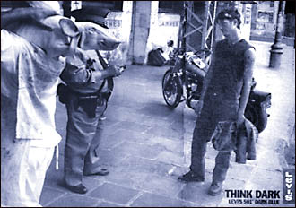

¿Dios es de derecha o de izquierda?
Esta pregunta es una de las muchas que se hace André Frossard
en su nada pretencioso pero nada despreciable librito "Dios en preguntas".
En realidad, no se las hace él: son las preguntas típicas que cualquier
creyente (y más aún un converso, hijo del fundador del Partido Comunista de Francia)
está acostumbrado a escuchar. Lo lindo del libro es que se trata
más bien de un compilado de preguntas que de respuestas;
en general, se da más espacio a la objeción, tratando de ponerla
en su justo lugar, que a la respuesta.... Es más honesto,
en un caso así ("respóndame en dos páginas: ¿Por qué hay sufrimiento?
¿Acaso el cristianismo no fracasó? ¿Para qué sirve creer? ...")
limitarse a tratar de discernir dónde están los errores evidentes, dónde
las opiniones personales, dónde las cuestiones arduas, y dónde el misterio...
a tratar de triunfar con esas respuestas de apologetas batalladores.
Esta pregunta en particular, no es típica (no es propiamente
una "objeción") y además es un poco ridícula. La respuesta de Frossard, sin
embargo, no carece de interés:
-
Podríamos remontarnos al pecado original y decir que al
hombre de izquierda le resulta difícil creer en él; mientras que al
hombre de derecha le resulta tan fácil hacerlo, que se le hace
difícil creer en la redención. Resulta más sencillo decir que
el hombre de izquierda cree actuar según su corazón, el
hombre de derecha según su razón, y que ambos se equivocan.
En cuanto a Dios... es muy difícil imaginarlo cómodo en
uno u otro partido; y uno puede preguntarse si no es El
quien inspiró esta máxima decisiva de nuestra Simone Weil,
cuyo genio comienza donde termina el de Pascal:
"Siempre hay que estar dispuesto para cambiar de campo
con la justicia, esa eterna fugitiva del bando de los vencedores"
-
Hay que adaptarse de algún modo a eso que llamamos
la realidad para poder ajustar cuentas con ella.
Esta realidad tiene hoy rasgos muy identificables, porque su violencia es la de una fúnebre vitalidad que se propaga por todas partes: pérdida de antiguos valores (independientemente de cómo se los juzgue), aburguesamiento total. Se compensa la aceptación del consumo con la excusa de un ostentoso anhelo democrático; se compensa el conformismo más degradado con el pretexto de una ostentosa exigencia de tolerancia.
Es cierto que hay gente que sigue actuando movida por
la inercia de unas necesidades civiles que se defienden desde hace
unos quince años, que lucha por una sincera inquietud democrática
o en nombre de una tolerancia real.
Pero, hace quince años, los significados de las palabras "obediencia"
y "desobediencia" eran profundamente distintos. La palabra "obediencia"
todavía provocaba aquel horrible sentimiento que arrastraba tras
décadas de dictaduras fascistas, de clericalismo, de moralismo
pequeño burgués; mientras que la palabra "desobediencia"
todavía significaba el maravilloso sentimiento que daba el
rebelarse contra aquello.
Todo eso fue desplazado, pero no por una rebelión de los desobedientes sino, inesperadamente, por la primera gran revolución auténtica de la derecha capitalista. Ahora, la dictadura, el clericalismo, el moralismo pequeño-burgués y el fascismo son residuos que resultan una molestia para este nuevo poder. ¿Acaso luchamos contra esos residuos? ¿Son sus normas las que tenemos que desobedecer?
La caracteristica más clara de esta revolución capitalista es su carácter destructor: su primera exigencia es desembarazarse de un universo moral que le impide la expansión.
Observemos el auge del delito en Argentina. Es un fenómeno inmenso de las nuevas condiciones de vida en nuestro país. No sólo los delincuentes tradicionales sino la masa juvenil está ya formada -con excepción de pequeñas elites- por criminaloides: miles de jóvenes que aceptan con descaro y violencia los valores de la cultura del consumo y al mismo tiempo profesan un progresismo meramente verbal.
Para todos esos jóvenes es válido el "modelo del desobediente": nadie se considera obediente. Pero las palabras han invertido su sentido: de acuerdo con la ideología destructora del nuevo capitalismo, el que se cree desobediente y se exhibe como tal, es en realidad obediente. El que disiente de este proceso destructor -y se considera obediente por creer en los valores que el capitalismo está destruyendo resulta ser, por lo tanto, el auténtico desobediente.
La destrucción, el nihilismo, es el signo dominante de este modelo de falsa desobediencia (falta de respeto, burla, desprecio por la piedad) en que consiste hoy la obediencia de siempre.

El aviso de LEVI'S aparecido en la revista ROLLING STONE
es una muestra más de esta consagración de
la falsa desobediencia.
El muchacho, investido con los emblemas de una cultura joven
que en algún tiempo significó libertad, luce con la
elegancia casual que atrae irresistiblemente a uno de los
segmentos más rendidores del mercado. Frente a él,
el policía gordo (que al fin de cuentas custodia las
propiedades de los fabricantes de LEVIS y de las
discográfícas que editan la música de rock y
publican sus avisos en la misma revista) es la
contrafigura, inofensiva pero odiosa, a la que el
punto de vista de la cámara dotó,
de manera también "casual", de una cabeza de cerdo.
El muchacho vestido de oscuro lo mira con sorna y
sólo piensa: "think dark".
En las páginas de ROLLING STONE es difícil distinguir los avisos comerciales de las producciones periodísticas, gracias a las buenas artes del diseño gráfico -una de las disciplinas más expansivas de la época-. Y así se suceden con casual fluidez el joven dark de LEVIS, la imagen del Indio Solari con una remera negra que lleva en el pecho la hoz y el martillo, el aviso de ROCK AND POP que parodia la tapa de Sargento Pepper, con Pergolini y otros yuppies mediáticos en lugar de los Beatles, y las poses fashion de los juglares de la nueva obediencia, como Calamaro o Ceratti.
Chau, pensá.
Esta adaptación fue realizada por la revista PARTE DE GUERRA, publicada en su edición de ocutbre de 1999).
More on St. Blog's Parish:
Primero: Un par de weblogs que valen la pena: Flos Carmeli de un terciario carmelita (de paso: un rato después de conocer Disputations me enteré de que el autor es terciario dominico). Y La vita nuova, (también conocido como "error503" o "Dylan's blog"; un weblog de un católico con intereses poéticos, fan de Dylan Thomas, G. M. Hopkins, etc. Gente muy interesante (estos poetas y estos bloggers).
Segundo: uno de los varios sacerdotes de por allá (EEUU) que tienen un weblog, recibió la orden de sus superiores de callarse por un plazo de seis meses; al parecer, el cura este era muy ingenioso, muy "ortodoxo"... y un poco demasiado satírico; y parece que dijo algo demasiado duro sobre un seminario de por allá (lo califico como un "nido de maricas" o algo parecido) y, por eso o por alguna otra cosa, se ligó el castigo. Cosa muy comentada en "St Blog's parish", por ej. acá y acá : (si es justo o injusto; por qué a los curas que dicen barbaridades "de izquierda" no les pasa nada, mientras que a los otros... ; la distinción entre la sátira, las reprensiones, y las faltas de caridad, etc). Dice Steve Mason:
- ...
Sometimes, we preach (or blog) to inform. At other times, we do so to start a conversation. Or to challenge. Or to encourage the fainthearted. Or to entertain. Or (perhaps always) to gain readers. Or to criticize bad ideas. Or to prove (to this or that subset of persons) that we are "orthodox" or "liberal" or "conservative." Sometimes we even preach (or blog) to convert.
All of this makes me wonder how the love of God should ideally shape and guide preaching and other public discourses like blogging. Admittedly, there are boundaries for all Christians, but my question is whether there might be some particular limits concerning public discourse (as there are limits in other domains) for those who are (or would be) priests.
...
En el santoral de hoy cae Edith Stein, la intelectual judía, discípula de Husserl, que se convirtió al catolicismo leyendo la Vida de Santa Teresa, se hizo monja carmelita a los 42 años, tomando el nombre de Teresa Benedicta de la Cruz, murió en Auschwitz el 9 de agosto de 1942, y fue canonizada por Juan Pablo II en 1998. Algunos otros links acá, acá, acá y acá. Y hay mucho material en inglés acá.
El Padre Nuestro según Simone Weil
(continuación)
"Nuestro pan, que es eterno, dádnoslo hoy"
(o "Danos hoy nuestro pan de cada día")
-
Cristo es nuestro pan.
Sólo podemos pedirlo para ahora.
Pues siempre está ahí, en la puerta de nuestra alma; quiere entrar, pero no fuerza el consentimiento. Si consentimos entra; pero tan pronto como no lo queremos se va.
No podemos comprometer hoy nuestra voluntad de mañana; no podemos hacer hoy un pacto con Él para que permanezca en nosotros a pesar nuestro. El consentir a su presencia es lo mismo que su presencia.
El consentimiento es un acto, sólo puede ser actual. No nos ha sido dada una voluntad que pueda aplicarse al futuro. Todo lo que no es eficaz en nuestra voluntad es imaginario. La parte eficaz de la voluntad es eficaz inmediatamente; su eficacia no es distinta de ella misma.La parte eficaz de la voluntad no es el esfuerzo, que se tiende hacia el porvenir. Es el consentimiento, el sí del matrimonio.
Un sí pronunciado en el instante presente para el instante presente, pero pronunciado como una palabra eterna, pues es el consentimiento a la unión de Cristo con la parte eterna de nuestra alma.
La mayoría concede que esta ambigüedad no es casual; es el pan, que es necesario para la subsistencia y que debe comerse todos los días. Se discute si el sentido es sobre el pan material (como figura de los bienes terrenos indispensables), o si el adjetivo misterioso apunta al "pan sobrenatural", al mismo Jesús -que dijo "este pan es mi cuerpo"- y que se nos da en la Eucaristía. Los teólogos suelen opinar que ambos sentidos son inseparables aquí, uno apunta al otro; pero Santa Teresa, por ejemplo, estaba convencida de que el sentido era el segundo; y se le hacía cuesta arriba aceptar que uno al rezar esta petición pudiera pensar en el pan material... Simone parece pensar más o menos igual en esto.
-
Aprende a rechazar la amistad, o más bien, el sueño de la amistad.
Desear la amistad es una gran falta. La amistad debe ser una alegría
gratuita como las que da el arte, o la vida. ...
Todo sueño de amistad merece quebrarse. No es por azar que tú no hayas sido amada jamás.... La amistad no se busca, no se sueña, no se desea: se ejercita ....
Venderías tu alma por la amistad....
-
Tenemos necesidad de pan. Somos seres que recibimos continuamente
nuestra energía desde afuera, pues a medida que la recibimos la agotamos en el esfuerzo.
Si nuestra energía no se renueva diariamente, nos volvemos carentes de fuerza e
incapaces de movimiento.
Aparte de la alimentación propiamente dicha, en sentido literal, todos los estímulos
son para nosotros fuentes de energía.
El dinero, el ascenso social, la consideración, el aplauso, los triunfos, la
fama, el poder, los afectos, todo lo que infunde en nosotros la capacidad de
obrar, es como el pan.
Si alguna de esas ataduras penetra bastante profundamente en nosotros,
hasta las raíces vitales de nuestra existencia carnal, su privación puede quebrarnos e
inclusive hacemos morir. Esto se llama morir de dolor. Es como morir de hambre.
Todos esos objetos de afecto constituyen, juntamente con el alimento en sentido
literal, el pan de aquí abajo.
Depende enteramente de las circunstancias el que
los tengamos o los perdamos. Mas con respecto a las
circunstancias no debemos pedir nada, sino que sean
conformes a la voluntad de Dios.
No debemos pedir el pan de aquí abajo.
Hay una energía trascendente, cuya fuente está en los cielos, y que corre por nosotros desde que la deseamos. Es realmente una energía; ejecuta acciones por intermedio de nuestra alma y nuestro cuerpo.
Debemos pedir este alimento. En el momento en que lo pedimos y por el hecho
de que lo pedimos
sabemos que Dios quiere dárnoslo. No debemos soportar el permanecer un solo día sin él.
Pues cuando las energías terrestres, sometidas a la necesidad de aquí abajo,
son las únicas que alimentan nuestros actos, sólo podemos hacer y pensar el
mal: "Dios vio que las maldades de los hombres se multiplicaban sobre
la tierra, y que lo producido por los pensamientos de su
corazón era constantemente, únicamente malo."
La necesidad que nos obliga al mal gobierna todo lo que existe en nosotros, salvo la energía de lo alto en el momento en que penetra en nosotros. Y de ella, no podemos hacer provisiones para el futuro.
Lo que no es tan obvio es el silogismo que sigue:
-
tener esos alimentos "terrenos", depende de las circunstancias;
pero no podemos pedir nada sobre las circunstancias;
ergo, no podemos pedir esos alimentos
Dos noticitas científicas ... sólo para iniciados (bueno... hay distintos niveles de iniciación...):
1) Murió Dijkstra,
capo de ciencias de la computación, programación y matemática; padre de la
"programación estructurada", y de los filósofos que se juntan a pensar y a comer spaghettis
con dos tenedores en torno a la mesa
Como dice uno en slashdot:
goto Heaven; (sólo para iniciados, dije!).
2) Encuentran lo que parece ser el primer algoritmo determinístico para decidir si un número es primo en tiempo polinomial. A los que no tienen idea, esto no le moverá un pelo. A los que tenemos una leve idea, esto nos puede parecer muy importante y preocupante: significa esto una amenaza para los algoritmos de encriptación clásicos de clave pública (RSA) ?? Dicen los que saben que no es para tanto: ni el hallazgo es tan importante -en la práctica y en la teoría- (ya había algoritmos probabilísticos); ni hay una relación directa entre este problema (el de decidir si un número es primo) y el otro (el de factorizar un numero compuesto).
En inglés; Disputations es de lo mejorcito entre los weblogs católicos de EEUU. Hoy trae una remake de la típica escena inicial de un libro de Wodehouse, con un obispo en el papel de Bertie, y Monsignor Reeves como el mayordomo...
Sólo para iniciados, hay que decirlo.
Y también para iniciados son estas diez razones para hacerse dominico.
Me dice alguien (pero alguien cuya opinión puedo sentirme obligado a tomar en cuenta) que a mi post de ayer sobre la exégesis de los milagros le iría el calificativo de "fundamentalista"...
Pueser. Algo de eso pensé mientras lo escribía, en realidad. Pero también, no es fácil... Veamos: por un lado, me disculpo con el link que puse al final, que trata de ser equilibrado, dentro de la tendencia "pro-milagro-en-el-sentido-literal". Por otro lado, así como el juez debe oír a los dos abogados para no perderse ninguno de los aspectos de cada lado, así también no hay más remedio que tratar de echar el resto en una posición "unilateral".... para que se vea el argumento de la parte,... y para que la contraria exponga sus razones, qué tanto.
Y no crea que yo mismo no soy capaz de asumir el papel de la parte contraria... (soy inmenso, contengo multitudes, decía Whitman). Pero no me apure.
Otro día la sigo.
-
Es preciso halagar a los imbéciles, y halagarlos por sus cualidades
menos nocivas. Acaso sea un instinto de conservación
el que lleva a la sociedad a conceder provisionalmente
la gloria a tantas almas mediocres.
El libro es una serie de comentarios sobre distintos autores, y muchos de ellos (Cervantes, Dostoyevsky, Unamuno y Whitman) me son muy queridos. Es lindo saber que compartimos esos amores con Papini. Es lindo, en particular, leer los elogios que le dedica al vasco justamente por su "Vida de Don Quijote y Sancho", libro tan entrañable para mí. Y también es emocionante descubrir que Papini se inició (más o menos como uno) en la poesía leyendo a Walt Whitman... no se me hubiera ocurrido; y que (más o menos como uno), su cariño por el viejo yanqui ha sobrevivido a conversiones intelectuales-religiosas...
De paso, y a modo de informe: esa mesa de saldo se encontraba
en calle Corrientes, al 1600 (la cuadra de "La Plaza"), unas
ediciones a $4, tapa dura, colores vivos, planos y variados
(colección "Biblioteca Contemporánea"). Otras cosas interesantes
de la misma colección que vi y podría recomendar, son:
"El profesor de historia", de V. Volkoff (novelita medio insólita,
escandalosamente "tradicionalista"), "El camarada Don Camilo",
de Guareschi (aunque es no es lo mejor de la serie de Don Camilo),
y, sobre todo, "El diario de un cura rural", de Bernanos.
Este último es un librazo. Recuerdo, y me hace un poco de gracia,
que en mis tiempos en que andaba acercándome con paso
no muy firme al cristianismo, a pesar de que mis lecturas incluían
cosas como Santa Teresa y San Agustín, ese título, visto más de
una vez en las mesas de usados, me espantaba un poco... me
parecía que debía ser una novela ... digamos .. "demasiado religiosa".
Y así recién lo conocí muchos años más tarde.
Y su frase final: "Todo es gracia" es, merecidamente,
un clásico.
Hay una versión impresionante en cine de Bresson.
Una nota (en inglés) en el National Review sobre la "Marcha de los SinDios" (March of the Godless) que está programada para Noviembre en Washington. Comentarios interesantes sobre el ateísmo en EEUU: sostiene que en EEUU hay más religión y más anti-religión que en la mayoría del mundo; que en Europa, al menos, donde la actitud mayoritaria es la indiferencia. Y al autor (católico converso) le gusta esto, le parece un síntoma de salud espiritual, digamos...
No estoy seguro ... también en España (atípica en esto, respecto del resto de Europa, supongo) me parece haber visto bastante militancia pro y (sobre todo) anti religión: pero eso no me dio impresión de salud, más bien de militancias puramente "pasionales", en el peor sentido de la palabra.
Pero quien sabe.
En el fondo, creo que me gustaría ver surgir (aunque sea por hoy) alguna patota porteña atea comecuras ... que agarre a palos a estos "católicos" que hoy están con parlantes en el microcentro atormentándonos con sus espantosos cantos de misa... (vi-ne-a-la-bar-a-dio-o-o-o-os....).
(Estuve a punto de usar el adjetivo piantavotos, pero supongo que eso es una antigüedad... además de inadecuado)
-
"Hay que hacer trabajar al dinero"
El archiconocido precepto de "Hacer trabajar al dinero" es, en el fondo, más teológico que económico.
'Trabajar' (laborare) significa 'sufrir'. Se trata, pues de hacer sufrir al Dinero, que es Dios.
... Hasta se lo hace sudar ... sudar la sangre de los pobres. Y multitudes revientan en
usinas y en negras catacumbas para que las vírgenes engendradas por exquisitos capitalistas
puedan exhibir la sonrisa de la Gioconda. A eso se lo llama "hacer trabajar al dinero".
.... Y el rostro pálido de Cristo es más pálido en el fondo de los pozos y entre el fuego.
El domingo pasado, se leyó en misa el milagro de la multiplicación de los panes . Se trata de uno de los milagros más difíciles de tragar, indudablemente. Y para los que quieren seguir "siendo cristianos" pero repugna esto de admitir milagros tan chocantes, los exégetas más progresistas-liberales (progresistas del siglo xix, hay que decirlo) han preparado varias exégesis más "aceptables"; más en sintonía con la mente moderna (o más precisamente: en sintonía con las ideas que la mente moderna tiene acerca de la mente antigua).
En el weblog yanqui de amy hay un par de posts al respecto, con comentarios de interés. También acá.
Estos católicos conservadores, como es natural -y bastante justificado- se ríen de estos comentadores... El eterno sermón de los "viejos curas de Woodstock" (es ya un lugar común el hecho paradójico de que hoy día los religiosos "progresistas" son en su mayoría viejos...) dice, en una de sus versiones, esto -que más de un sufrido feligrés católico ha tenido que oír el domingo en la iglesia-:
-
No es que, realmente Jesús haya multiplicado los panes y los peces. Fue más bien
que a su llamada, ante ese espléndido clamor de justicia social, cada cual
se tornó a su vecino, los hombres se miraron a los ojos y se aceptaron mutuamente;
y entonces, liberados de sus egoísmos, comenzaron a compartir los panes y los
peces que muchos de ellos habían traído consigo en abundancia cuando
partieron a seguir a Jesús en su viaje al desierto...
Como dice uno: "Verdaderamente: este tipo nos está diciendo que es un milagro
conseguir que unos judíos del siglo I compartan un sandwich con su prójimo
en el desierto ?" Vamos!
"Habría que preguntarse por qué los escritores de los evangelios, en la cultura
antigua del cercano Oriente, hubieran podido asombrarse tanto de observar
algo que no es más que la hospitalidad más rudimentaria, y darle
tanta importancia como para que hacerlo figurar en los
cuatro evangelios".
(Exceptuando la resurrección, es el único milagro que está en los cuatro).
Ironiza Mark Shea:
-
Of course, lesser breeds without the PhD in biblical studies have long suspected that this may be because Jesus miraculously multiplied loaves and fishes just as Elijah miraculously multiplied the flour and oil, and that it is blindingly obvious that the gospel writers see quite a bit more going on here than a sort of Capraesque moment of communitarian caring and sharing. Some might even note that since this miracle is obviously seen by the Evangelists as a sign of the Eucharist, which is God's miraculous provision for us, and that reading it as a sign of our "aren't we fabulous" self-sufficiency is a catastrophically dumb misreading directly opposed to the actual sense of the text. But lacking PhDs, such lesser breeds are not to be trusted, of course.
 Me dice Bungo que no puedo negarme a mi público.. A los lectores hay que darles
lo que ellos buscan.
Me dice Bungo que no puedo negarme a mi público.. A los lectores hay que darles
lo que ellos buscan. Y si tantos caen acá buscando fotos de Madonna, o de niños desnudos, tratemos de no decepcionarlos, y pongamos alguna imagencita relacionada. Vaya pues esta Madonna de Rafael.
De nada.
Bungo también juega con la idea de un sitio web que,
bajo la fachada de una sana e inocente página pornográfica más, esconda
suprepticia e insidiosamente la temible propaganda
del renacer espiritual... No está mal.
Recuerda un poco lo que dice Borges
que dijo el Dr. Johnson, a modo de parodia de insulto: "Su esposa,
señor, con el pretexto de que trabaja en un lupanar, vende
telas de contrabando".